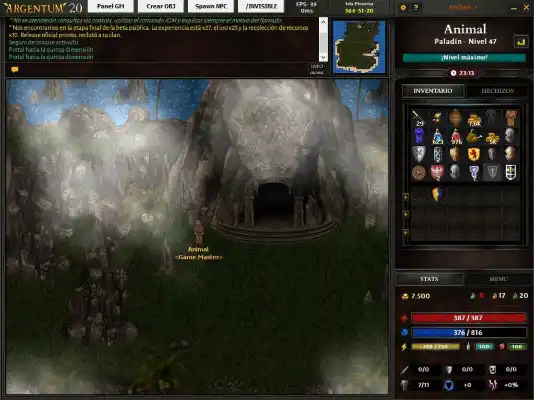

You can now enjoy the definitive version of Argentum Online 20!
As of February 2025, Argentum Online 20, the project of the original developers, continues to thrive
with a dedicated player base and ongoing updates. The game reached its final version and recently
celebrated its 24th anniversary with special in-game events, including exclusive quests, rare item
drops, and community gatherings. Developers have also hinted at upcoming enhancements to the game's
engine to improve performance and modernize its visuals while retaining the classic pixel-art style
that fans adore. Additionally, the community has been actively organizing tournaments and
role-playing events, showcasing the enduring appeal of this free-to-play, open-world RPG. With its
nostalgic charm and passionate player base, Argentum Online remains a beloved title in the retro
gaming scene.
Furius AO: Advances on the last patch.
The server recently introduced a major patch that includes new maps and balanced gameplay
adjustments. Additionally, a recent PvP tournament drew significant attention, with players
competing for exclusive rewards and bragging rights.
Imperium AO's busy battlefield
The server recently launched a new expansion featuring custom maps, quests, and balanced PvP
mechanics, which have been well-received by the community. The server also hosted a
large-scale in-game event, "The Battle for the Throne," where players competed in faction-based
warfare for exclusive rewards and titles.
AO Forever leads the popularity ranking
AO Forever has solidified its position as the most popular server in the AO community. Known for
its faithful recreation of the classic gameplay experience combined with modern enhancements, AO
Forever continues to attract a massive and active player base. The server recently celebrated a
milestone with its highest concurrent player count in years
New Argentum Cup Edition?
The Argentum Online community is buzzing with anticipation for a potential new edition of the
Argentum Cup, one of the most iconic competitive events in the game's history. The previous
edition's success, which saw record participation and thrilling PvP battles, has set high
expectations for this year's event.